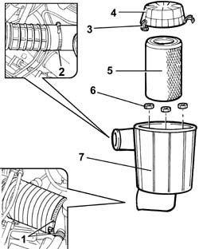
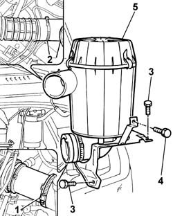
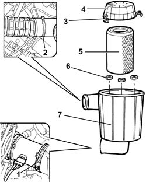
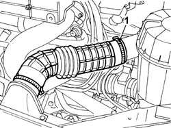
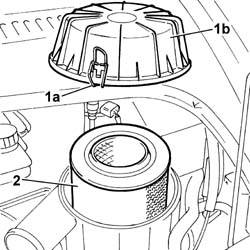
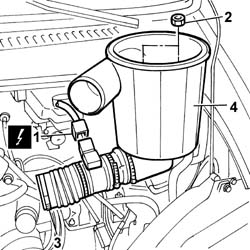

1048A10 AIR CLEANER FILTERING ELEMENT - REPLACE
- Path
- Procedures > 10 ENGINE UNIT > 1048 ENGINE AIR SUPPLY CIRCUIT > 1048A VACUUM AIR CIRCUIT > 1048A10 AIR CLEANER FILTERING ELEMENT - REPLACE
- Kind
- repair procedure (removal / refitting; the operation number is the code)
- Applies to
- all engines; all production periods
- Interactive page
- https://sloeber94.github.io/elrnDB-fDct/en/#/244000783
Applies to: engines: 2.0 16V; all production periods
 Removing
Removing
 Refitting
Refitting1. Disconnect the hose between the filter and the flow meter and the oil vapour pipe opening the retaining bands.
2. Disconnect the cold air hose from the connector on the air filter casing opening the retaining band.
3. Open the retaining springs.
4. Remove the filter casing cover.
5. Remove the filter element.
6. Undo the nuts fixing the filter casing.
7. Remove the filter casing.

Applies to: engines: 2.0 16V; all production periods
Refitting
Removing- Fit the filter casing in place.
- Tighten the nuts fixing the filter casing.
- Fit the filter element.
- Fit the filter casing cover.
- Close the retaining springs.
- Fit the hose joining the flow meter and the oil vapour pipe to the air filter casing and tighten the retaining bands.
- Fit the hose joining the cold air intake to the air filter casing and tighten the retaining band.
Applies to: engines: 2.3 JTD 16V; all production periods
Removing
Refitting1. Disconnect the turbocharger air intake hose from the air filter casing.
2. Disconnect the cold air hose from the connector on the air filter casing.
3. Undo the bolt fixing the air filter casing mounting bracket.
4. Undo the bolt fixing the air filter casing to the bracket joined to the windscreen washer fluid reservoir.
5. Remove the air filter casing from the engine compartment.

Applies to: engines: 2.3 JTD 16V; all production periods
Refitting
Removing- Fit the air filter casing in the engine compartment.
- Tighten the bolt fixing the air filter casing to the bracket joined to the windscreen washer fluid reservoir.
- Connect the cold air hose to the connector on the air filter casing.
- Connect the turbocharger air intake hose to the air filter casing.
Applies to: engines: 2.8 JTD 8V; all production periods
Removing
Refitting1. Disconnect the hose between the filter and the flow meter opening the retaining band.
2. Disconnect the cold air hose from the connector on the air filter casing opening the retaining band.
3. Open the retaining springs.
4. Remove the filter casing cover.
5. Remove the filter element.
6. Undo the nuts fixing the filter casing.
7. Remove the filter casing.

Applies to: engines: 2.8 JTD 8V; all production periods
Refitting
Removing- Fit the filter casing in place.
- Tighten the nuts fixing the filter casing.
- Fit the filter element.
- Fit the filter casing cover.
- Fit the hose joining the flow meter to the air filter casing and tighten the retaining band.
- Fit the hose joining the cold air intake to the air filter casing and tighten the retaining band.
Applies to: engines: 2.0 JTD 8V; all production periods
Removing
Refitting1. Disconnect the cold air hose from the connector on the air filter casing.

Applies to: engines: 2.0 JTD 8V; all production periods
1. Open the retaining springs (1a) and remove the protective cover (1b) for the filter element.
2. Remove the filter element from the filter casing.

Applies to: engines: 2.0 JTD 8V; all production periods
1. Disconnect the electrical connection for the air flow meter.
 | Description | Connector |
|---|---|---|
1 | Air flow meter | K041 |
2. Undo the nuts fixing the filter casing to the mounting bracket.
3. Disconnect the band securing the air flow meter to the turbo air supply pipe.
4. Remove the air filter casing.

Applies to: engines: 2.0 JTD 8V; all production periods
Refitting
Removing- Fit the air filter casing in the engine compartment.
- Connect the band securing the air flow meter to the turbo air supply pipe.
- Tighten the nuts fixing the filter casing to the mounting bracket.
- Connect the electrical connection for the air flow meter.
| Description | Connector |
|---|---|---|
. | Air flow meter | K041 |
- Fit the filter element to the filter casing.
- Fit the protective cover for the filter element and secure it using the springs.
- Connect the cold air hose to the connector on the air filter casing.
Topics that link to this page (6)
- 1042B10 CNG SUPPLY LINE FROM SOLENOID TO PRESSURE REDUCTION UNIT - R R
- 3330E46 RIGID PIPE (ONE) FROM MASTER CYLINDER PUMP TO LEFT FRONT BRAKE - R.R.
- 3330E51 RIGID PIPE (ONE), LH OR RH, FROM MASTER CYLINDER TO FITTING - R R
- 3340A30 RPM SENSOR (ONE) OF ONE L/H OR R/H FRONT WHEEL - R+R
- 3340B52 PUMP/CENTRAL OBS PIPE - R R
- 5505A13 SUPPLEMENTARY JUNCTION CONTROL UNIT IN ENGINE BAY - R R